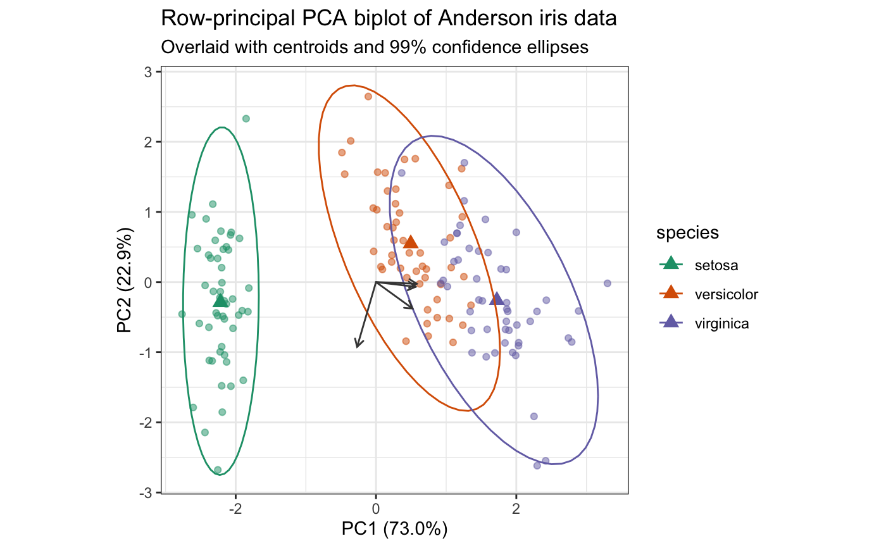
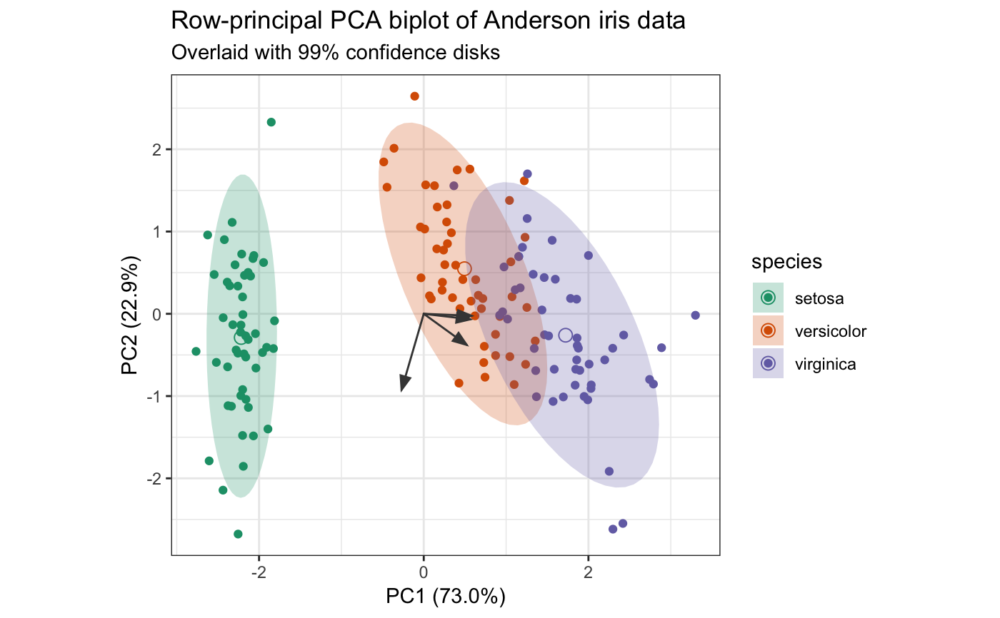
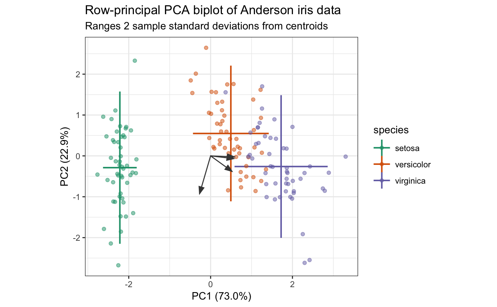
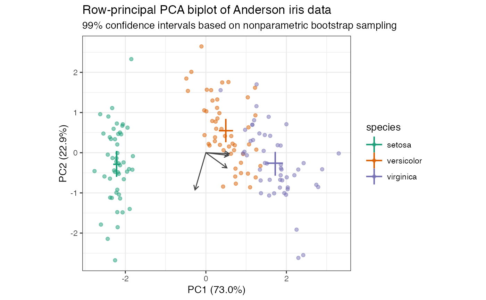

Functionality for principal components analysis ('prcomp') objects
methods-prcomp.RdThese methods extract data from, and attribute new data to,
objects of class "prcomp" as returned by stats::prcomp().
# S3 method for prcomp as_tbl_ord(x) # S3 method for prcomp recover_rows(x) # S3 method for prcomp recover_cols(x) # S3 method for prcomp recover_inertia(x) # S3 method for prcomp recover_coord(x) # S3 method for prcomp recover_conference(x) # S3 method for prcomp augmentation_rows(x) # S3 method for prcomp augmentation_cols(x) # S3 method for prcomp augmentation_coord(x)
Arguments
| x | An ordination object. |
|---|
Author
Emily Paul
Examples
# Confer PCA weights and inertia between cases and variables data(country_attributes) country_attributes %>% prcomp() %>% as_tbl_ord() %>% print() -> attributes_pca#> # A tbl_ord of class 'prcomp': (13 x 6) x (6 x 6)' #> # 6 coordinates: PC1, PC2, ..., PC6 #> # #> # Rows: [ 13 x 6 | 0 ] #> PC1 PC2 PC3 ... | #> | #> 1 0.0796 4.77 0.0922 | #> 2 0.451 5.80 1.30 ... | #> 3 -1.79 0.842 0.0145 | #> 4 3.45 0.906 0.250 | #> 5 -4.54 -4.36 -0.0156 | #> #> # #> # Columns: [ 6 x 6 | 0 ] #> PC1 PC2 PC3 ... | #> | #> 1 -0.331 0.375 0.00981 | #> 2 0.320 0.517 0.187 | #> 3 0.301 0.593 -0.616 ... | #> 4 -0.387 0.286 0.145 | #> 5 -0.548 -0.138 -0.661 | #> 6 -0.497 0.373 0.357 |# form biplot attributes_pca %>% ggbiplot( aes(label = .name), sec.axes = "cols", scale.factor = dim_cols(attributes_pca) ) + theme_bw() + theme(panel.grid = element_blank()) + geom_rows_text(aes(x = PC1, y = PC2), color = "seagreen") + geom_cols_vector(aes(x = PC1, y = PC2), color = "darkred") + geom_cols_text( aes(x = PC1, y = PC2), color = "darkred", hjust = "outward", vjust = "outward" )# covariance biplot attributes_pca %>% confer_inertia(0) %>% ggbiplot( aes(label = .name), sec.axes = "rows", scale.factor = dim_rows(attributes_pca) ) + theme_bw() + theme(panel.grid = element_blank()) + geom_rows_text(aes(x = PC1, y = PC2), color = "seagreen") + geom_cols_vector(aes(x = PC1, y = PC2), color = "darkred") + geom_cols_text_repel(aes(x = PC1, y = PC2), color = "darkred")# Scaled PCA of Anderson iris data with annotated biplot iris[, -5] %>% prcomp(scale = TRUE) %>% as_tbl_ord() %>% confer_inertia(1) %>% mutate_rows(species = iris$Species) %>% print() -> iris_pca#> # A tbl_ord of class 'prcomp': (150 x 4) x (4 x 4)' #> # 4 coordinates: PC1, PC2, ..., PC4 #> # #> # Rows: [ 150 x 4 | 1 ] #> PC1 PC2 PC3 ... | species #> | <fct> #> 1 -2.26 -0.478 0.127 | 1 setosa #> 2 -2.07 0.672 0.234 ... | 2 setosa #> 3 -2.36 0.341 -0.0441 | 3 setosa #> 4 -2.29 0.595 -0.0910 | 4 setosa #> 5 -2.38 -0.645 -0.0157 | 5 setosa #> # … with 145 more rows #> # #> # Columns: [ 4 x 4 | 0 ] #> PC1 PC2 PC3 ... | #> | #> 1 0.521 -0.377 0.720 | #> 2 -0.269 -0.923 -0.244 ... | #> 3 0.580 -0.0245 -0.142 | #> 4 0.565 -0.0669 -0.634 |iris_pca %>% ggbiplot(aes(color = species)) + theme_bw() + scale_color_brewer(type = "qual", palette = 2) + geom_rows_point(alpha = .5) + stat_rows_center(fun.center = "mean", size = 3, shape = "triangle") + stat_rows_ellipse(level = .99) + geom_cols_vector(color = "#444444") + ggtitle( "Row-principal PCA biplot of Anderson iris data", "Overlaid with centroids and 99% confidence ellipses" )iris_pca %>% ggbiplot(aes(color = species)) + theme_bw() + geom_rows_point() + stat_rows_center(fun.center = "mean", size = 3, shape = 1) + geom_polygon( aes(fill = species), color = NA, alpha = .25, stat = "rows_ellipse" ) + geom_cols_vector(color = "#444444") + scale_color_brewer( type = "qual", palette = 2, aesthetics = c("color", "fill") ) + ggtitle( "Row-principal PCA biplot of Anderson iris data", "Overlaid with 99% confidence disks" )# Scaled PCA of Anderson iris data with ranges and confidence intervals iris[, -5] %>% prcomp(scale = TRUE) %>% as_tbl_ord() %>% confer_inertia(1) %>% mutate_rows(species = iris$Species) %>% print() -> iris_pca#> # A tbl_ord of class 'prcomp': (150 x 4) x (4 x 4)' #> # 4 coordinates: PC1, PC2, ..., PC4 #> # #> # Rows: [ 150 x 4 | 1 ] #> PC1 PC2 PC3 ... | species #> | <fct> #> 1 -2.26 -0.478 0.127 | 1 setosa #> 2 -2.07 0.672 0.234 ... | 2 setosa #> 3 -2.36 0.341 -0.0441 | 3 setosa #> 4 -2.29 0.595 -0.0910 | 4 setosa #> 5 -2.38 -0.645 -0.0157 | 5 setosa #> # … with 145 more rows #> # #> # Columns: [ 4 x 4 | 0 ] #> PC1 PC2 PC3 ... | #> | #> 1 0.521 -0.377 0.720 | #> 2 -0.269 -0.923 -0.244 ... | #> 3 0.580 -0.0245 -0.142 | #> 4 0.565 -0.0669 -0.634 |iris_pca %>% ggbiplot(aes(color = species)) + theme_bw() + scale_color_brewer(type = "qual", palette = 2) + geom_rows_lineranges(fun.data = mean_sdl, size = .75) + geom_rows_point(alpha = .5) + geom_cols_vector(color = "#444444") + ggtitle( "Row-principal PCA biplot of Anderson iris data", "Ranges 2 sample standard deviations from centroids" )iris_pca %>% ggbiplot(aes(color = species)) + theme_bw() + scale_color_brewer(type = "qual", palette = 2) + geom_rows_lineranges( fun.data = mean_cl_boot, fun.args = list(conf.int = .99), size = .75 ) + geom_rows_point(alpha = .5) + geom_cols_vector(color = "#444444") + ggtitle( "Row-principal PCA biplot of Anderson iris data", "99% confidence intervals based on nonparametric bootstrap sampling" )